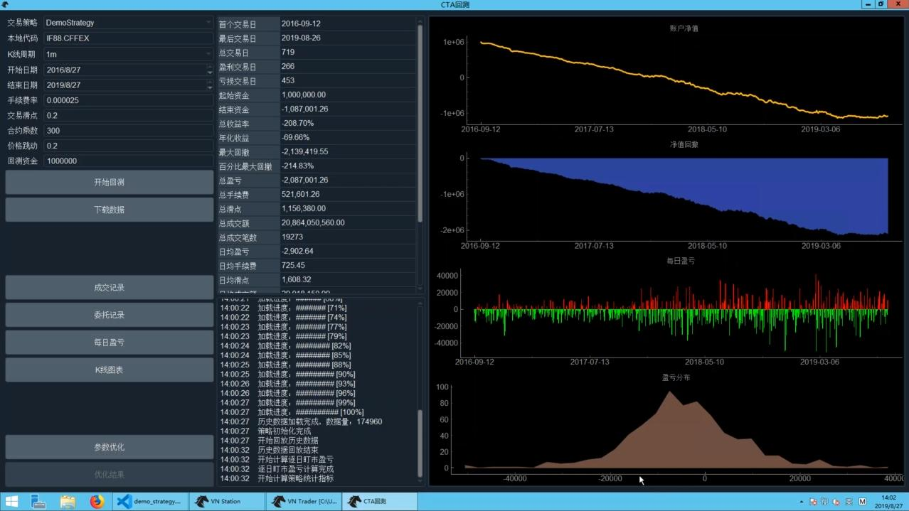

全实战进阶系列-CTA策略, 平台小鹅通，by 用 Python 的交易员
进阶课程计划
- CTA：50集，两个月
- 价差交易
- 算法交易
- 波动率交易
- 复杂系统：分布式部署
通过vnpy公众号问问题
开发环境
云：
- 阿里云上海二区
- 2 Core 4G
- Windows 2012 数据中心版
- VnStudio
- VsCode
或本地Win10
策略模板
继承 CtaTemplate
Ctrl-k Ctrl-r 折叠所有函数
parameters: 策略参数的名称，外部指定的数值, e.g. ma_windowsvariables: 策略变量的名称, 内部计算的数值，e.g. ma_value- 类型只支持
int,str,float,bool list,dict等放到__init__
所有加了 @virtual 的，都是 callback，用户自己实现
on_init: 在图形化界面上点了启动按钮on_start: 点了启动按钮on_stop: 点了停止按钮on_tick: 收到 tick 数据on_bar: 收到 K 线数据on_trade: 成交on_order: 委托推送，订单状态变化on_stop_order: 停止单推送
交易类函数: buy, sell, short, cover, send_order, cancel_order, cancel_all
交易以外功能函数: write_log, get_engine_type(区分回测和实盘), load_bar, load_tick, put_event(通知图形界面变化), send_email, sync_data(状态写入硬盘，恢复交易状态)
策略开发
策略目录 ~/strategies，双均线为例
首先定义参数和变量
1 | class DemoStrategy(CTaTemplate): |
初始化
1 | def on_init(self): |
双均线逻辑
1 | def on_bar(self, bar: BarData): |
实盘 K 线合成
1 | def on_tick(self, tick: TickData): |
历史回测
VnStation加载 CTA 策略，CTA 回测- 点配置，配置 rqdate 账号密码，重启
- 点 CTA 回测，看到 RQData 数据初始化成功
- 交易策略，选DemoStrategy，开始回测，设置参数
- 亏钱策略

参数优化
- 去掉手续费，不那么亏钱
- 回测设置，合约代码，手续费滑点，开始结束时间
- 点参数优化，设置搜索区间，多进程优化，网格搜索
- 优化完成，点优化结果，排序，寻找参数平原
- 双均线策略在 IF88 上最好的参数为
fast_window=6, slow_window=80(无手续费滑点)
自动交易(基于 simnow)
- 加载 CTP gateway
- 连接 7*24 小时环境
- 若连接成功，则显示合约信息查询成功、资金信息等
- 点CTA策略，实盘自动交易
- strategy_name: 实例名称
- vt_symbol: IF1909.CFFEX
- … 其他 parameters
- 初始化->启动 …. 收盘之后->结束, variables 缓存到 cta_strategy_data.json